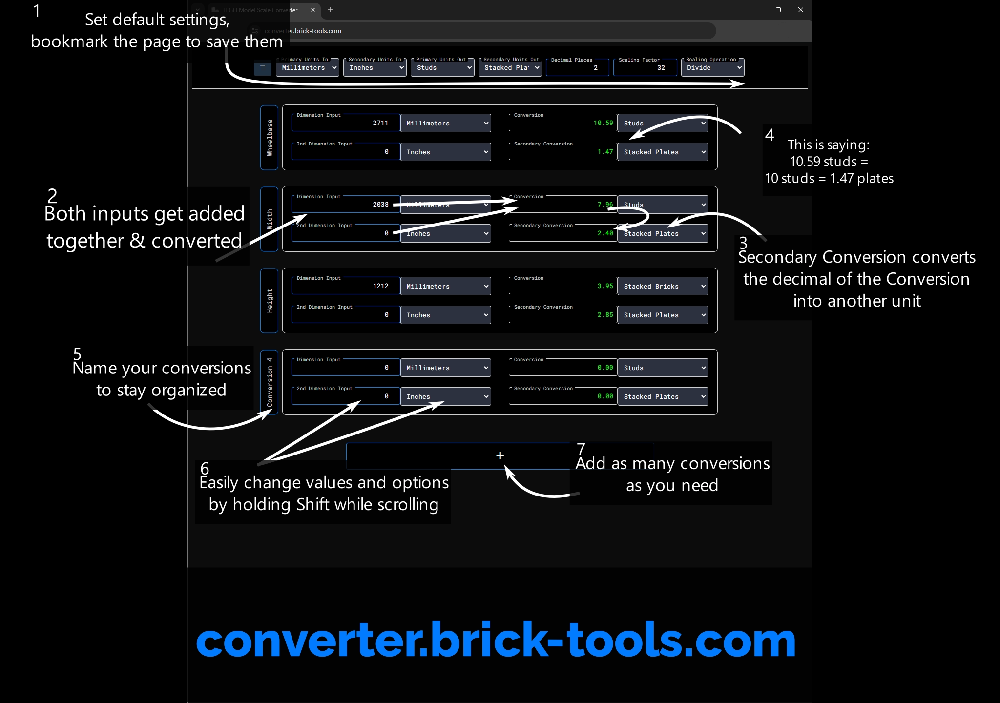

The "Dimension Input" and "2nd Dimension" are added together. This helps if your input is in 2 units, such as feet and inches.
The output "Conversion" is the exact conversion of the inputs.
The "Remainder" converts the fractional part of the direct conversion to another unit. This allows the output to be 2 units such as stacked bricks and stacked plates. Note that if the output is 1.6 unit A and 2.1 unit B, the total size is 1 unit A + 2.1 unit B, not 1.6 A + 2.1 B.
You can change the title of each Conversion box.
Under the "Options" for each box, you can change the scale. This ignores the scale set in the header and only effects its box.
The "Scale Calculator" in the side menu helps you get the scale you want.
The default settings of the webite are saved to the URL, so bookmarking the page saves your settings. This saves the decimal places, scaling factor, and operation in the header, and also the input and output units in the "Default Settings" panel in the side menu.

LEGO Scales
Common "Minifigure Scales":
1 fig(5 studs) = 6 feet
1 stud = 1 foot / 30cm
3 studs = 1 meter
Common Speed Champions tire diameter ∅: 24mm
Use the Scale Calculator with your real measurement and model size measurement to calculate your scale